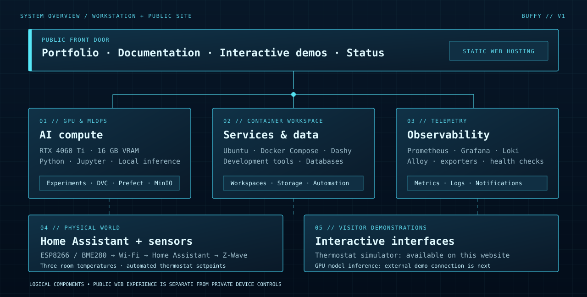
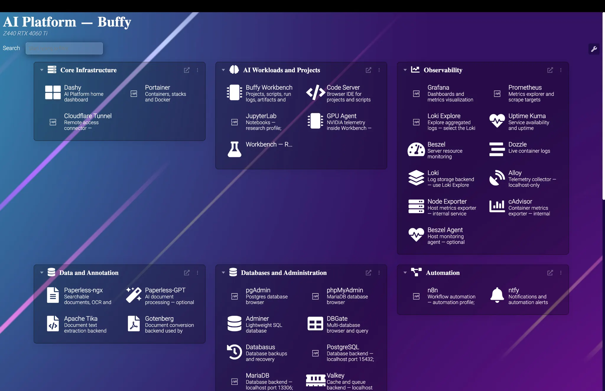

Meet Buffy.
My machine.
My laboratory.
I turned a workstation into a home for local AI experiments, self-hosted software, monitoring, and smart-home control. This is where I build things, break them, learn how they work, and document the results.
What I've built
Follow real projects from problem to working system.
EXPLORE PROJECTS ↗ 02 / FIELD NOTESHow it works
Architecture diagrams, technical choices, workflows, and lessons learned.
READ THE DOCS ↗ 03 / HANDS ONTry a demo
Experiment with thermostat logic today; explore the GPU demo roadmap.
OPEN DEMOS ↗ 04 / OPERATIONSService status
Follow availability checks for the public parts of the lab.
VIEW STATUS ↗Beyond a server.
Real things built on it.
The hardware is only the beginning. These are the systems, experiments, and integrations that give the homelab a purpose.
RTX AI & ML research platform
A bare-metal environment for local models, experiments, versioned datasets, workflow orchestration, and research artifacts.
EXPLORE THE PLATFORM ↗20% / 40% / 40%
ESP8266 → HA
Z-WAVE → T6 PRO
A room-aware smart thermostat
How an overheating bedroom led me to solder wireless sensors and build a locally hosted, multi-room heating controller.
READ THE BUILD STORY ↗Observability & infrastructure operations
Prometheus, Grafana, Loki, exporters, dashboards, service checks, and notifications working across a Docker ecosystem.
SEE HOW IT'S OPERATED ↗Four layers.
One self-hosted ecosystem.
Compute runs the experiments. Containers run the tools. Monitoring explains their behavior. IoT connects the software to the physical world.

AI and experimentation
RTX acceleration, model inference, computer vision, notebooks, and experimental workflows.
Containers and data
Docker Compose services, development workspaces, PostgreSQL, MariaDB, caches, and document tools.
Operational visibility
Resource metrics, logs, uptime monitoring, and event-driven notifications.
IoT and control
Home Assistant, ESPHome, environmental sensors, and a Z-Wave thermostat.
This is my actual homelab.
Meet the self-hosted launcher I use to reach the tools that run on Buffy. Organized by workload, from research notebooks to telemetry.

The tools behind the experiments.
Search by name or filter by purpose. Each tool fills a role in an ecosystem I deploy, maintain, and extend.
A tour of the software ecosystem, not a direct link to administrative interfaces.
From dataset to repeatable experiment.
The research environment connects a GPU workstation with version control, workflow tools, artifact storage, and observability.
This is the intended end-to-end workflow of my research platform. The documentation covers each component; experiment-specific benchmarks will be added as runs are recorded.
Read the ML infrastructure case study ↗A thermostat you can experiment with.
Move the sliders to see how my room-aware control strategy weighs temperatures and chooses a thermostat setpoint. This simulation never connects to my home.
Room-aware heating logic
Two bedrooms each contribute 40% to the calculation; the living room contributes 20%. The controller uses a target, deadband, and bedroom overheat rule.
Come inside the lab.
This website is the public front door. The next addition is a guarded, RTX-powered AI interface connected to the physical workstation.
A workbench for
curiosity at scale.
Buffy evolves with each project. Some systems are already powering my experiments and home; others are the next things I'm building. I document the details because the process is just as interesting as the result.